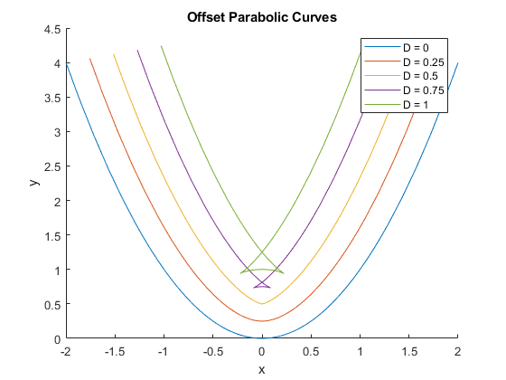
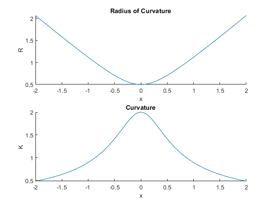
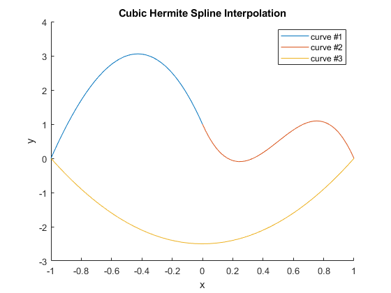
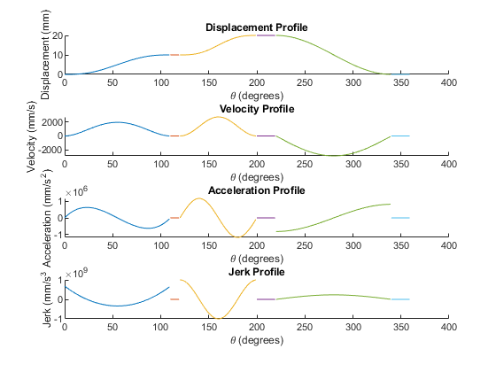
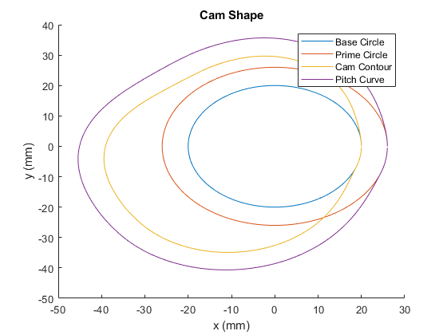
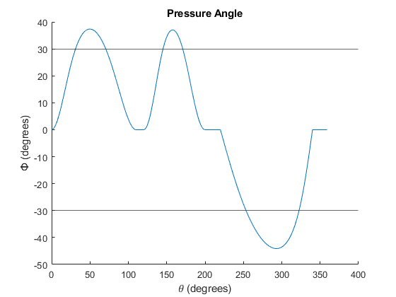

<!DOCTYPE HTML PUBLIC "-//W3C//DTD HTML 4.01 Transitional//EN">
<html>
<head>
<META http-equiv="Content-Type" content="text/html; charset=UTF-8">
<!--
This HTML was auto-generated from MATLAB code.
To make changes, update the MATLAB code and republish this document.
      -->
<title>hw3</title>
<meta name="generator" content="MATLAB 23.2">
<link rel="schema.DC" href="http://purl.org/dc/elements/1.1/">
<meta name="DC.date" content="2024-04-29">
<meta name="DC.source" content="hw3.m">
<style type="text/css">
html,body,div,span,applet,object,iframe,h1,h2,h3,h4,h5,h6,p,blockquote,pre,a,abbr,acronym,address,big,cite,code,del,dfn,em,font,img,ins,kbd,q,s,samp,small,strike,strong,tt,var,b,u,i,center,dl,dt,dd,ol,ul,li,fieldset,form,label,legend,table,caption,tbody,tfoot,thead,tr,th,td{margin:0;padding:0;border:0;outline:0;font-size:100%;vertical-align:baseline;background:transparent}body{line-height:1}ol,ul{list-style:none}blockquote,q{quotes:none}blockquote:before,blockquote:after,q:before,q:after{content:'';content:none}:focus{outine:0}ins{text-decoration:none}del{text-decoration:line-through}table{border-collapse:collapse;border-spacing:0}

html { min-height:100%; margin-bottom:1px; }
html body { height:100%; margin:0px; font-family:Arial, Helvetica, sans-serif; font-size:10px; color:#000; line-height:140%; background:#fff none; overflow-y:scroll; }
html body td { vertical-align:top; text-align:left; }

h1 { padding:0px; margin:0px 0px 25px; font-family:Arial, Helvetica, sans-serif; font-size:1.5em; color:#d55000; line-height:100%; font-weight:normal; }
h2 { padding:0px; margin:0px 0px 8px; font-family:Arial, Helvetica, sans-serif; font-size:1.2em; color:#000; font-weight:bold; line-height:140%; border-bottom:1px solid #d6d4d4; display:block; }
h3 { padding:0px; margin:0px 0px 5px; font-family:Arial, Helvetica, sans-serif; font-size:1.1em; color:#000; font-weight:bold; line-height:140%; }

a { color:#005fce; text-decoration:none; }
a:hover { color:#005fce; text-decoration:underline; }
a:visited { color:#004aa0; text-decoration:none; }

p { padding:0px; margin:0px 0px 20px; }
img { padding:0px; margin:0px 0px 20px; border:none; }
p img, pre img, tt img, li img, h1 img, h2 img { margin-bottom:0px; }

ul { padding:0px; margin:0px 0px 20px 23px; list-style:square; }
ul li { padding:0px; margin:0px 0px 7px 0px; }
ul li ul { padding:5px 0px 0px; margin:0px 0px 7px 23px; }
ul li ol li { list-style:decimal; }
ol { padding:0px; margin:0px 0px 20px 0px; list-style:decimal; }
ol li { padding:0px; margin:0px 0px 7px 23px; list-style-type:decimal; }
ol li ol { padding:5px 0px 0px; margin:0px 0px 7px 0px; }
ol li ol li { list-style-type:lower-alpha; }
ol li ul { padding-top:7px; }
ol li ul li { list-style:square; }

.content { font-size:1.2em; line-height:140%; padding: 20px; }

pre, code { font-size:12px; }
tt { font-size: 1.2em; }
pre { margin:0px 0px 20px; }
pre.codeinput { padding:10px; border:1px solid #d3d3d3; background:#f7f7f7; }
pre.codeoutput { padding:10px 11px; margin:0px 0px 20px; color:#4c4c4c; }
pre.error { color:red; }

@media print { pre.codeinput, pre.codeoutput { word-wrap:break-word; width:100%; } }

span.keyword { color:#0000FF }
span.comment { color:#228B22 }
span.string { color:#A020F0 }
span.untermstring { color:#B20000 }
span.syscmd { color:#B28C00 }
span.typesection { color:#A0522D }

.footer { width:auto; padding:10px 0px; margin:25px 0px 0px; border-top:1px dotted #878787; font-size:0.8em; line-height:140%; font-style:italic; color:#878787; text-align:left; float:none; }
.footer p { margin:0px; }
.footer a { color:#878787; }
.footer a:hover { color:#878787; text-decoration:underline; }
.footer a:visited { color:#878787; }

table th { padding:7px 5px; text-align:left; vertical-align:middle; border: 1px solid #d6d4d4; font-weight:bold; }
table td { padding:7px 5px; text-align:left; vertical-align:top; border:1px solid #d6d4d4; }


  </style>
</head>
<body>
<div class="content">
<pre class="codeinput">clear <span class="string">all</span>;
close <span class="string">all</span>;
clc;
format <span class="string">long</span>;

name = <span class="string">'Natalie Ratzlaff'</span>;
id = <span class="string">'A17091327'</span>;
hw_num = 3;

x = @(t) t;
y = @(t) t^2;
x1 = @(t) t - (0.25/sqrt(1+4*t^2))*2*t;
y1 = @(t) t^2 + (0.25/sqrt(1+4*t^2));
x2 = @(t) t - (0.5/sqrt(1+4*t^2))*2*t;
y2 = @(t) t^2 + (0.5/sqrt(1+4*t^2));
x3 = @(t) t - (0.75/sqrt(1+4*t^2))*2*t;
y3 = @(t) t^2 + (0.75/sqrt(1+4*t^2));
x4 = @(t) t - (1/sqrt(1+4*t^2))*2*t;
y4 = @(t) t^2 + (1/sqrt(1+4*t^2));

figure(1);
hold <span class="string">on</span>;
fplot(x,y,[-2,2]);
fplot(x1,y1,[-2,2]);
fplot(x2,y2,[-2,2]);
fplot(x3,y3,[-2,2]);
fplot(x4,y4,[-2,2]);
xlabel(<span class="string">'x'</span>);
ylabel(<span class="string">'y'</span>);
title(<span class="string">'Offset Parabolic Curves'</span>);
legend(<span class="string">'D = 0'</span>,<span class="string">'D = 0.25'</span>,<span class="string">'D = 0.5'</span>,<span class="string">'D = 0.75'</span>,<span class="string">'D = 1'</span>);

p1a = <span class="string">'See figure 1'</span>

R = @(t) sqrt(1 + 4*t^2)/2;
K = @(t) 2/sqrt(1+4*t^2);

figure(2);
subplot(2,1,1);
hold <span class="string">on</span>;
fplot(R,[-2,2]);
xlabel(<span class="string">'x'</span>);
ylabel(<span class="string">'R'</span>);
title(<span class="string">'Radius of Curvature'</span>);
subplot(2,1,2);
hold <span class="string">on</span>;
fplot(K,[-2,2]);
xlabel(<span class="string">'x'</span>);
ylabel(<span class="string">'K'</span>);
title(<span class="string">'Curvature'</span>);

p1b = <span class="string">'See fugure 2'</span>

p1c = <span class="string">'The curves overlap on each other when D exceeds the maximum radius of cuvravure.'</span>

figure(3);
hold <span class="string">on</span>;
c1 = @(x) -2*x^3 - 13*x^2 - 10*x + 1;
fplot(c1,[-1 0]);
c2 = @(x) -18*x^3 + 27*x^2 - 10*x + 1;
fplot(c2,[0 1]);
c3 = @(x) 2.5*x^2 - 2.5;
fplot(c3,[-1 1]);
xlabel(<span class="string">'x'</span>);
ylabel(<span class="string">'y'</span>);
title(<span class="string">'Cubic Hermite Spline Interpolation'</span>);
legend(<span class="string">'curve #1'</span>,<span class="string">'curve #2'</span>,<span class="string">'curve #3'</span>);

p2 = <span class="string">'See figure 3'</span>

ta = 0:109;
tb = 110:119;
tc = 120:199;
td = 200:219;
te = 220:339;
tf = 340:359;
w = (1000)*2*pi/60;
y3a = 100.*(ta./110).^3 - 150.*(ta./110).^4 + 60.*(ta./110).^5;
dy3a = (300.*(ta./110).^2 - 600.*(ta./110).^3 + 300.*(ta./110).^4)*w;
d2y3a = (600.*(ta./110) - 1800.*(ta./110).^2 + 1200.*(ta./110).^3)*w^2;
d3y3a = (600 - 3600.*(ta./110) + 3600.*(ta./110).^2)*w^3;
y3b = 10 + 0.*tb;
dy3b = 0.*tb;
d2y3b = 0.*tb;
d3y3b = 0.*tb;
y3c = 10 + 10.*((tc-120)./80 - 1/(2*pi)*sin(2*pi.*(tc-120)./80));
dy3c = (10*(w/80).*(1-cos(2*pi.*(tc-120)./80)))*w;
d2y3c = (20*pi*(w/80)^2.*sin(2*pi.*(tc-120)./80))*w^2;
d3y3c = (40*pi^2*(w/80)^3.*cos(2*pi.*(tc-120)./80))*w^3;
y3d = 20 + 0.*td;
dy3d = 0.*td;
d2y3d = 0.*td;
d3y3d = 0.*td;
y3e = -10.*(1-cos(pi.*(te-220)./120)) + 20;
dy3e = (-10*(pi*w/120).*sin(pi.*(te-220)./120))*w;
d2y3e = (-10*(pi*w/120)^2.*cos(pi.*(te-220)./120))*w^2;
d3y3e = (10*(pi*w/120)^3.*sin(pi.*(te-220)./120))*w^3;
y3f = 0.*tf;
dy3f = 0.*tf;
d2y3f = 0.*tf;
d3y3f = 0.*tf;

figure(4);
subplot(4,1,1);
hold <span class="string">on</span>;
plot(ta,y3a);
plot(tb,y3b);
plot(tc,y3c);
plot(td,y3d);
plot(te,y3e);
plot(tf,y3f);
xlabel(<span class="string">' (degrees)'</span>);
ylabel(<span class="string">'Displacement (mm)'</span>);
title(<span class="string">'Displacement Profile'</span>);
subplot(4,1,2);
hold <span class="string">on</span>;
plot(ta,dy3a);
plot(tb,dy3b);
plot(tc,dy3c);
plot(td,dy3d);
plot(te,dy3e);
plot(tf,dy3f);
xlabel(<span class="string">' (degrees)'</span>);
ylabel(<span class="string">'Velocity (mm/s)'</span>);
title(<span class="string">'Velocity Profile'</span>);
subplot(4,1,3);
hold <span class="string">on</span>;
plot(ta,d2y3a);
plot(tb,d2y3b);
plot(tc,d2y3c);
plot(td,d2y3d);
plot(te,d2y3e);
plot(tf,d2y3f);
xlabel(<span class="string">' (degrees)'</span>);
ylabel(<span class="string">'Acceleration (mm/s^2)'</span>);
title(<span class="string">'Acceleration Profile'</span>);
subplot(4,1,4);
hold <span class="string">on</span>;
plot(ta,d3y3a);
plot(tb,d3y3b);
plot(tc,d3y3c);
plot(td,d3y3d);
plot(te,d3y3e);
plot(tf,d3y3f);
xlabel(<span class="string">' (degrees)'</span>);
ylabel(<span class="string">'Jerk (mm/s^3'</span>);
title(<span class="string">'Jerk Profile'</span>);

p3a = <span class="string">'See figure 4'</span>

t = [ta tb tc td te tf].*pi./180;
y3 = [y3a y3b y3c y3d y3e y3f];

[ccx,ccy] = pol2cart(t,y3+20);
[px,py] = pol2cart(t,y3+26);
[bcx,bcy] = pol2cart(t,20);
[pcx,pcy] = pol2cart(t,26);

figure(5);
hold <span class="string">on</span>;
plot(bcx,bcy);
plot(pcx,pcy);
plot(ccx,ccy);
plot(px,py);
xlabel(<span class="string">'x (mm)'</span>);
ylabel(<span class="string">'y (mm)'</span>);
title(<span class="string">'Cam Shape'</span>);
legend(<span class="string">'Base Circle'</span>,<span class="string">'Prime Circle'</span>,<span class="string">'Cam Contour'</span>,<span class="string">'Pitch Curve'</span>);

p3b = <span class="string">'See figure 5'</span>

dy3 = [dy3a dy3b dy3c dy3d dy3e dy3f];
pa = atand(((1/w).*dy3)./(y3 + 20));

figure(6);
hold <span class="string">on</span>;
plot(t.*(180/pi),pa);
xlabel(<span class="string">' (degrees)'</span>);
ylabel(<span class="string">'Φ (degrees)'</span>);
title(<span class="string">'Pressure Angle'</span>);
yline(30);
yline(-30);

p3c = <span class="string">'See figure 6'</span>

p3d = <span class="string">'This cam has a pressure angle over 30 degrees, so it is not a good design for the angular velocity it is set to; lowering the angular velocity or making the cam features less sharp would decrease the max pressure angle and make it a better cam.'</span>
</pre>
<pre class="codeoutput">Warning: Function behaves unexpectedly on array inputs. To improve performance,
properly vectorize your function to return an output with the same size and
shape as the input arguments. 
Warning: Function behaves unexpectedly on array inputs. To improve performance,
properly vectorize your function to return an output with the same size and
shape as the input arguments. 
Warning: Function behaves unexpectedly on array inputs. To improve performance,
properly vectorize your function to return an output with the same size and
shape as the input arguments. 
Warning: Function behaves unexpectedly on array inputs. To improve performance,
properly vectorize your function to return an output with the same size and
shape as the input arguments. 
Warning: Function behaves unexpectedly on array inputs. To improve performance,
properly vectorize your function to return an output with the same size and
shape as the input arguments. 
Warning: Function behaves unexpectedly on array inputs. To improve performance,
properly vectorize your function to return an output with the same size and
shape as the input arguments. 
Warning: Function behaves unexpectedly on array inputs. To improve performance,
properly vectorize your function to return an output with the same size and
shape as the input arguments. 
Warning: Function behaves unexpectedly on array inputs. To improve performance,
properly vectorize your function to return an output with the same size and
shape as the input arguments. 
Warning: Function behaves unexpectedly on array inputs. To improve performance,
properly vectorize your function to return an output with the same size and
shape as the input arguments. 

p1a =

    'See figure 1'

Warning: Function behaves unexpectedly on array inputs. To improve performance,
properly vectorize your function to return an output with the same size and
shape as the input arguments. 
Warning: Function behaves unexpectedly on array inputs. To improve performance,
properly vectorize your function to return an output with the same size and
shape as the input arguments. 

p1b =

    'See fugure 2'


p1c =

    'The curves overlap on each other when D exceeds the maximum radius of cuvravure.'

Warning: Function behaves unexpectedly on array inputs. To improve performance,
properly vectorize your function to return an output with the same size and
shape as the input arguments. 
Warning: Function behaves unexpectedly on array inputs. To improve performance,
properly vectorize your function to return an output with the same size and
shape as the input arguments. 
Warning: Function behaves unexpectedly on array inputs. To improve performance,
properly vectorize your function to return an output with the same size and
shape as the input arguments. 

p2 =

    'See figure 3'


p3a =

    'See figure 4'


p3b =

    'See figure 5'


p3c =

    'See figure 6'


p3d =

    'This cam has a pressure angle over 30 degrees, so it is not a good design for the angular velocity it is set to; lowering the angular velocity or making the cam features less sharp would decrease the max pressure angle and make it a better cam.'

</pre>
      <p class="footer">
<br>
<a href="https://www.mathworks.com/products/matlab/">Published with MATLAB&reg; R2023b</a>
<br>
</p>
</div>
<!--
##### SOURCE BEGIN #####
clear all;
close all;
clc;
format long;

name = 'Natalie Ratzlaff';
id = 'A17091327';
hw_num = 3;

x = @(t) t;
y = @(t) t^2;
x1 = @(t) t - (0.25/sqrt(1+4*t^2))*2*t;
y1 = @(t) t^2 + (0.25/sqrt(1+4*t^2));
x2 = @(t) t - (0.5/sqrt(1+4*t^2))*2*t;
y2 = @(t) t^2 + (0.5/sqrt(1+4*t^2));
x3 = @(t) t - (0.75/sqrt(1+4*t^2))*2*t;
y3 = @(t) t^2 + (0.75/sqrt(1+4*t^2));
x4 = @(t) t - (1/sqrt(1+4*t^2))*2*t;
y4 = @(t) t^2 + (1/sqrt(1+4*t^2));

figure(1);
hold on;
fplot(x,y,[-2,2]);
fplot(x1,y1,[-2,2]);
fplot(x2,y2,[-2,2]);
fplot(x3,y3,[-2,2]);
fplot(x4,y4,[-2,2]);
xlabel('x');
ylabel('y');
title('Offset Parabolic Curves');
legend('D = 0','D = 0.25','D = 0.5','D = 0.75','D = 1');

p1a = 'See figure 1'

R = @(t) sqrt(1 + 4*t^2)/2;
K = @(t) 2/sqrt(1+4*t^2);

figure(2);
subplot(2,1,1);
hold on;
fplot(R,[-2,2]);
xlabel('x');
ylabel('R');
title('Radius of Curvature');
subplot(2,1,2);
hold on;
fplot(K,[-2,2]);
xlabel('x');
ylabel('K');
title('Curvature');

p1b = 'See fugure 2'

p1c = 'The curves overlap on each other when D exceeds the maximum radius of cuvravure.'

figure(3);
hold on;
c1 = @(x) -2*x^3 - 13*x^2 - 10*x + 1;
fplot(c1,[-1 0]);
c2 = @(x) -18*x^3 + 27*x^2 - 10*x + 1;
fplot(c2,[0 1]);
c3 = @(x) 2.5*x^2 - 2.5;
fplot(c3,[-1 1]);
xlabel('x');
ylabel('y');
title('Cubic Hermite Spline Interpolation');
legend('curve #1','curve #2','curve #3');

p2 = 'See figure 3'

ta = 0:109;
tb = 110:119;
tc = 120:199;
td = 200:219;
te = 220:339;
tf = 340:359;
w = (1000)*2*pi/60;
y3a = 100.*(ta./110).^3 - 150.*(ta./110).^4 + 60.*(ta./110).^5;
dy3a = (300.*(ta./110).^2 - 600.*(ta./110).^3 + 300.*(ta./110).^4)*w;
d2y3a = (600.*(ta./110) - 1800.*(ta./110).^2 + 1200.*(ta./110).^3)*w^2;
d3y3a = (600 - 3600.*(ta./110) + 3600.*(ta./110).^2)*w^3;
y3b = 10 + 0.*tb;
dy3b = 0.*tb;
d2y3b = 0.*tb;
d3y3b = 0.*tb;
y3c = 10 + 10.*((tc-120)./80 - 1/(2*pi)*sin(2*pi.*(tc-120)./80));
dy3c = (10*(w/80).*(1-cos(2*pi.*(tc-120)./80)))*w;
d2y3c = (20*pi*(w/80)^2.*sin(2*pi.*(tc-120)./80))*w^2;
d3y3c = (40*pi^2*(w/80)^3.*cos(2*pi.*(tc-120)./80))*w^3;
y3d = 20 + 0.*td;
dy3d = 0.*td;
d2y3d = 0.*td;
d3y3d = 0.*td;
y3e = -10.*(1-cos(pi.*(te-220)./120)) + 20;
dy3e = (-10*(pi*w/120).*sin(pi.*(te-220)./120))*w;
d2y3e = (-10*(pi*w/120)^2.*cos(pi.*(te-220)./120))*w^2;
d3y3e = (10*(pi*w/120)^3.*sin(pi.*(te-220)./120))*w^3;
y3f = 0.*tf;
dy3f = 0.*tf;
d2y3f = 0.*tf;
d3y3f = 0.*tf;

figure(4);
subplot(4,1,1);
hold on;
plot(ta,y3a);
plot(tb,y3b);
plot(tc,y3c);
plot(td,y3d);
plot(te,y3e);
plot(tf,y3f);
xlabel(' (degrees)');
ylabel('Displacement (mm)');
title('Displacement Profile');
subplot(4,1,2);
hold on;
plot(ta,dy3a);
plot(tb,dy3b);
plot(tc,dy3c);
plot(td,dy3d);
plot(te,dy3e);
plot(tf,dy3f);
xlabel(' (degrees)');
ylabel('Velocity (mm/s)');
title('Velocity Profile');
subplot(4,1,3);
hold on;
plot(ta,d2y3a);
plot(tb,d2y3b);
plot(tc,d2y3c);
plot(td,d2y3d);
plot(te,d2y3e);
plot(tf,d2y3f);
xlabel(' (degrees)');
ylabel('Acceleration (mm/s^2)');
title('Acceleration Profile');
subplot(4,1,4);
hold on;
plot(ta,d3y3a);
plot(tb,d3y3b);
plot(tc,d3y3c);
plot(td,d3y3d);
plot(te,d3y3e);
plot(tf,d3y3f);
xlabel(' (degrees)');
ylabel('Jerk (mm/s^3');
title('Jerk Profile');

p3a = 'See figure 4'

t = [ta tb tc td te tf].*pi./180;
y3 = [y3a y3b y3c y3d y3e y3f];

[ccx,ccy] = pol2cart(t,y3+20);
[px,py] = pol2cart(t,y3+26);
[bcx,bcy] = pol2cart(t,20);
[pcx,pcy] = pol2cart(t,26);

figure(5);
hold on;
plot(bcx,bcy);
plot(pcx,pcy);
plot(ccx,ccy);
plot(px,py);
xlabel('x (mm)');
ylabel('y (mm)');
title('Cam Shape');
legend('Base Circle','Prime Circle','Cam Contour','Pitch Curve');

p3b = 'See figure 5'

dy3 = [dy3a dy3b dy3c dy3d dy3e dy3f];
pa = atand(((1/w).*dy3)./(y3 + 20));

figure(6);
hold on;
plot(t.*(180/pi),pa);
xlabel(' (degrees)');
ylabel('Φ (degrees)');
title('Pressure Angle');
yline(30);
yline(-30);

p3c = 'See figure 6'

p3d = 'This cam has a pressure angle over 30 degrees, so it is not a good design for the angular velocity it is set to; lowering the angular velocity or making the cam features less sharp would decrease the max pressure angle and make it a better cam.'
##### SOURCE END #####
-->
</body>
</html>
